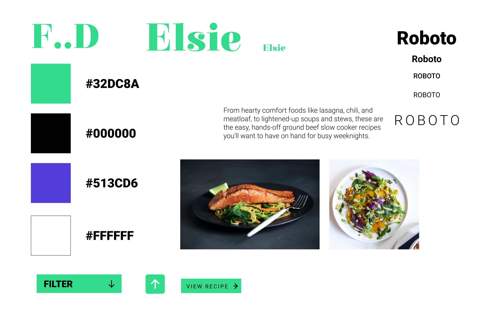
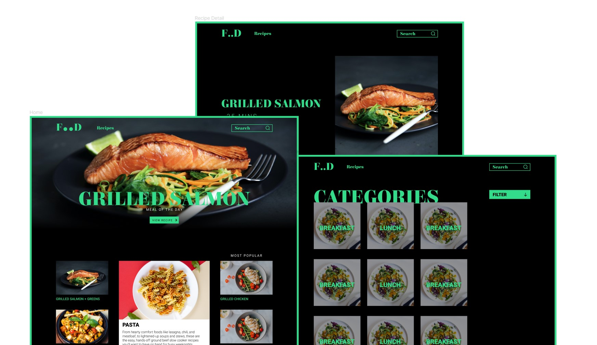
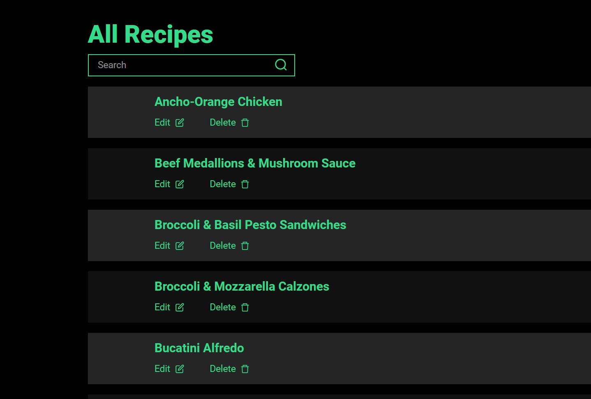
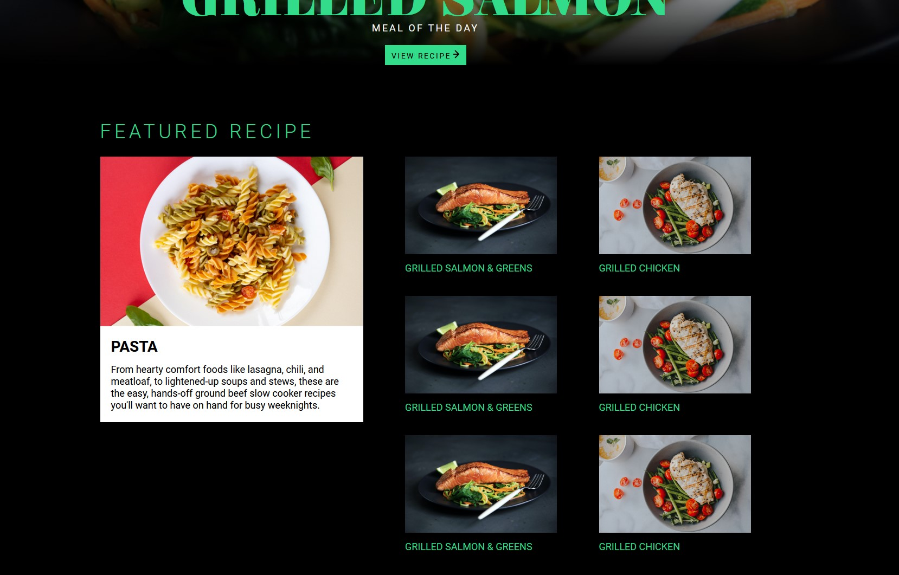

Php Scripting
We were tasked with creating a responsive cooking-themed PHP website. The site is populated by dynamic SQL database content. There was an alpha, beta, and final build created during the 10-week timeframe in which the project was completed. I learned the basics of dynamic webpage design through the use of PHP and SQL databases.
context & challenge
For this course, we were tasked with creating a PHP-based website that had dynamic content that populated the site through the use of SQL databases. The theme for this particular project was cooking, so we were tasked with creating a site that displayed recipes. We had 10 weeks to individually complete three builds of the project. The purpose of this project was to introduce dynamic webpage design through the use of databases.
My goal for this project was to create an aesthetically pleasing cooking website that included the foundations of PHP to populate the site with dynamic content. Since I had no prior experience with PHP, I did not try to include anything that seemed out of the scope for an introductory course.
alpha design & build
Before coding the alpha build of the site, I first completed the design phase. Since this course was not entirely focused on design, I did a more abridged version of my typical design process. I only experimented with a few design concepts before landing on the one that was created for each build. I felt that a sleek black and green layout lent itself well to a high-class cooking site aesthetic. Again, since I knew that this would eventually be coded, I kept things minimal to ensure that I would be able to complete it.
I coded the alpha in static HTML, CSS, and a small amount of JQuery and Javascript (the latter two were removed in later builds). I was familiar with these languages, so there were minimal challenges during this phase of the project.
Coding the alpha prototype was the most challenging aspect of the project. Although I had a working sample of code, converting this code into my own version led to some issues. I had to implement some workarounds within the CSS to achieve a similar interaction to the sample, but after some trial-and-error, I was able to get a working prototype that I was happy with.
beta build
The beta required us to convert our static site into a dynamic PHP site. This process required many hours of trial and error since I was coding PHP for the first time. The main obstacles that I faced during this phase were having content appear on-screen through the use of the SQL database, and creating the CRUD functionality on the site, and having the image upload functionality working.
Since I had little experience with PHP, I based my folder structure and code on the working sample that was available to us. Taking this code and fitting it to my site still required tweaking and various structural changes in order for it to function, but after receiving some help, I was able to get the foundation of the code working. After following the recorded lectures and online tutorials, I was able to get the ‘Create’, ‘Read’, and ‘Destroy’ functions of CRUD functionality working without too much issue. However, the ‘Update’ part of the equation proved very challenging. After spending a few days attempting to code and debug the function, I had to resort to getting some help from a friend who had more experience working with PHP than I had. After breaking down my code, he had found that there was a single comma missing from one of the lines of code that allowed the ‘Update’ function to properly execute. He had also suggested that I look into using a Base64 method for the image upload function, which I had not implemented yet. After some research, I was able to get the image upload function working through the Base64 method.
With each of the four functions of the CRUD working as well as the image upload function, I was done with the beta phase of the project. I was happy with the progress but knew that there were several features that were missing from the final build, such as the search function and populating the site with real recipes.
 final build
Feeling more confident in my understanding of PHP, transitioning from the beta to the final phase was more smooth than the previous transition. From here, I had to add more dynamic content to the site and have a functioning search feature.
Although tedious, adding the forty recipes to the site and having them display was a seamless process with the CRUD functionality executing correctly.
Getting the search forms to work proved more challenging, however. I wanted to implement it with a similar structure to how I had included other components on the page (with the ‘include …” function) but was not able to get it displaying correctly. I pivoted from there and tried echoing the same content directly on the page, which displayed correctly.
Overall, the final build required lots of work on little things, but I never ran into any challenges that required more than a few hours of debugging at most to solve.

solution
My goal for the site was to create a simple and effective site that showcased the basic functions of PHP, and I feel that the final solution represents that. My original vision for the homepage, category, and all recipes pages was executed. I envisioned having dynamic input fields on the ‘create recipe’ page, but compromises were made with text boxes since it allowed for more simple integration into the SQL database.
I would have liked to add a dedicated page for the admin pages with a login system, but with the 10-week timeline, I decided to focus on the foundation of the site and its relation to the SQL database being correctly executed.
the result
I learned a lot from this project throughout the previous 10 weeks. PHP and SQL databases were completely new concepts to me. Just like when I was first learning HTML, CSS, and Javascript, there were many hours of debugging and growing pains before reaching the final build. Although the final build is far from perfect and there are places that I want to improve moving forward (such as filters and dynamic input fields), I am happy with how the project turned out. I had a clear design idea from the early stages, and from the static coding phase into the dynamic coding phase, that idea was executed. This project and course was a good start to dynamic webpage design and code and I look forward to learning more about it in further courses.